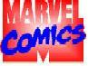
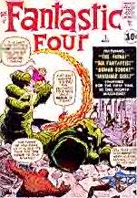
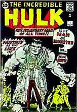
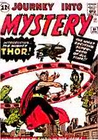
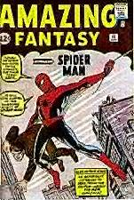
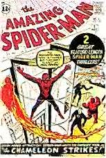
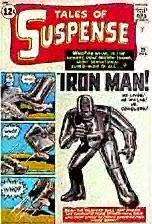

|
|
|
History of
 The Marvel Age 1960's Part One  The burst of creativity that led to the modern Marvel Comics began in 1961. A torrent of ideas seemed to rush through the pages of the company's publications as the concept of the super hero was reworked and revised, reshaped and revitalized. Ultimately, a veritable renaissance was achieved. A virtual army of new characters sprang up in the 1960's and became giants in the field; their combined strength turned a moribund industry around. With characteristic hyperbole, but also considerable accuracy, editor Stan Lee dubbed this period "The Marvel Age of Comics." In fact, the term has been adopted by comic book fans all over the world and is still used today to describe the 1960's. In creating The Fantastic Four and the ground breaking books that followed it, Stan Lee and Jack Kirby established that the personalities of the heros rather than the plots, should be of paramount importance. The Fantastic Four acquired their amazing powers after their experimental rocket passed through a storm of cosmic rays. The Fantastic Four dazzled readers with their oddball personalities, but the manner in which they were brought to life was even more of a break through. Most comic books had been created from scripts prepared by writers and editors. The words came first, and usually the artists were given instructions on how to divide the stories into pages and panels. With an accomplished professional like Jack Kirby, Lee knew that he would receive powerful pages even if he gave the artist nothing more than a synopsis, which was all he provided for the first issue of Fantastic Four. When the drawing came back Lee added dialogue and captions. The results were so splendid that Kirby and Lee never worked any other way again.  For their second super hero, Lee and Kirby came up with another monstrous figure, who was inspired by the success of The Thing, and also by the comic books like Tales to Astonish. The result was The Incredible Hulk (May 1962). The fear of radiation was a theme that recurred throughout the early 1960's, and again, radiation was the gimmick that provided The Hulk with his uncanny powers. The original Hulk story depicted the first test of a new "gamma bomb" invented by a scientist named Bruce Banner, who was exposed to the blast through the machinations of a Communist spy working under the transparent alias "Igor." The spy was a throwback to bygone days; eventually such conventional devices were abandoned in favor of more imaginative plot developments, but Igor was tolerated because his presence served to turn Banner into the Hulk.  By 1962, Marvel was on a roll. The little company was bursting at the seams, and was beginning to feel constrained by the deal with DC that allowed only eight Marvel books to be distributed per month. As a result, the next round of super heroes made their first appearances not in new publications, but as features in the already existing "monster" comics, which had now outlived their popularity. In August 1962, The Mighty Thor took the stage in Journey Into Mystery #83. A typically flawed modern Marvel hero, Dr. Don Blake walked with a limp and used a cane until he discovered the long-lost hammer of the ancient god Thor. Its power changed Blake into the virtually omnipotent Thor, complete with armor, helmet and golden locks. In the early 1960's the super heroes were popular, but they were coming out only once every two months. Lee had enough time to work on the plots, but he turned the detailed scripting to Thor over to his brother Larry Lieber. The results were good, but the tiny Marvel crew was just too busy to give him the attention he deserved. More effort was being expended on another new super hero, one who would eventually become the company's best known creation, and ultimately its informal corporate mascot as well.  The first Spider-Man story was originally intended as no more than a one-shot experiment, and almost didn't get into print at all. "Martin Goodman didn't want to publish it", recalls Stan Lee. Goodman was convinced that readers would find the subject of spiders distasteful. Fortunately for all concerned, a comic book called Amazing Adult Fantasy was about to be canceled due to faltering sales. For the occation, the comic book reverted to ist original title of Amazing Fantasy, an appropriate amendment since Spider-Man was to be the most important adolescent super hero in comics.  Spider-Man was the hero and the teenage helper rolled into one; he was his own sidekick. Marvel's first editor, Joe Simon, theorized that kid companions like Captain America's Bucky were important because they gave the protagonist someone to talk to; Spider-Man talked to himself. In his first apperence he mused aloud, but subsequently Lee adopted the device of the thought balloon with its characteristic bubbles. Spider-Man, despite the fact that he was not originally intended to star in a series, became the epitome of the radical innovations that characterized The Marvel Age. Lee used him to challenge the very concept of the super hero. Spider-Man was neurotic, compulsive and profoundly skeptical about the whole idea of becoming a costumed hero. The Fantastic Four argued with each other, and the Hulk and Thor had problems with their alter egos, but Spider-Man had to struggle with himself. In the origin story (August 1962), Peter Parker is a bookish, bespectacled high school student, isolated and unpopular. He lives with his Aunt May and Uncle Ben. While attending a science exhibit, Peter is bitten by a spider that has accidentally received a dose of radioactivity. As a result, Peter acquires the agility and proportionate strength of an arachnid. This story, with its challenge to comic book cliches, created an unexpected sensation. Months later Marvel got the sales figures, and that issue of Amazing Fantasy was one of the best selling Marvel ever had. However the usual months of creative and production work leading to publication kept Amazing Spider-Man #1 from appearing until March 1963.  Seeming to pluck ideas out of the air as major new characters appeared, Stan Lee showed something like vision when he chose the country of Vietnam as the setting for the origin of Iron Man (Tales of Suspense #39, March 1963). In 1963 comparatively few Americans were intrested in Vietnam, but before long the war being waged there would become the most crucial and controversial event of the 1960's. For Lee, the setting may have been merely expedient, enabling him to introduce the Communist villains he still employed with some regularity. Later, he had second thoughts about his somewhat simplistic treatment of the Asian nation's problems. Yet Ironman was a character whose very premise demanded political intrigue.
RETURN TO THE MARVEL'S MAIN HOME PAGE
|